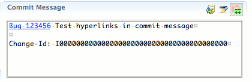
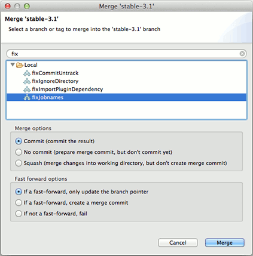
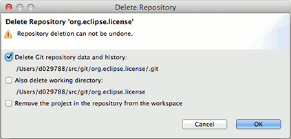
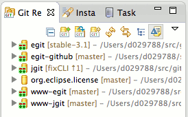
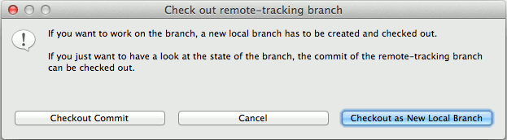

Support Mylyn links in History View, Staging View and Commit Dialog

History View now follows renames by default
Add option for --no-commit in merge dialog

Allow user to configure decoration of ignored resources
Ask whether to remove/delete repository when pressing delete in repositories view
Make "Delete Repository..." in Repositories View more explicit

Only show Gerrit menu entries when Gerrit is configured for a repository
Cleanup ordering of Git menus
Improve usability of "Create New Tag" dialog
Enable restrained synchronization
Use the same code for all comparison actions, making sure that a comparison launches a synchronization instead when there is more than a single resource to compare (either when the user selected more than one resource or when the selected resource is part of a larger logical model).
Show Gerrit icon in Repositories View for repositories configured for Gerrit

Offer to create local branch when attempting to check out remote-tracking branch

Include annotated tags with "Show All Branches and Tags" in History View
Staging View
Move commit-related buttons to "Commit Message" section of Staging View
Add file filtering to the Staging View toolbar
Add presentation options (list, tree, compact tree) to Staging View (in the view menu opened from the triangle)